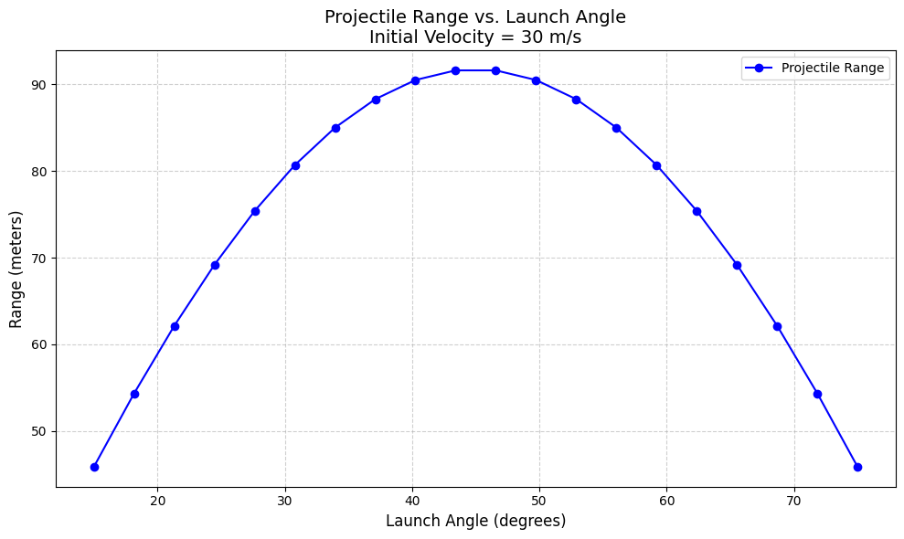

Problem 2
📘 1. Theoretical Foundation
🔧 Governing Equation
The motion of a forced damped pendulum is governed by the second-order nonlinear differential equation:
Where: - \(\theta(t)\) is the angular displacement as a function of time. - \(b\) is the damping coefficient. - \(g\) is the gravitational acceleration. - \(L\) is the length of the pendulum. - \(A\) is the amplitude of the external driving force. - \(\omega\) is the angular frequency of the external force.
This equation captures: - The restoring torque from gravity: \(\frac{g}{L}\sin\theta\). - The damping torque: \(b\frac{d\theta}{dt}\). - The external driving torque: \(A\cos(\omega t)\).
🧪 Small-Angle Approximation
For small oscillations where \(\theta\ll1\) (in radians), we can linearize the sine term using the Taylor expansion:
Thus, the equation becomes:
This is a linear nonhomogeneous differential equation with constant coefficients.
🧮 Analytical Solution of the Linearized Equation
The general solution to the linearized equation:
Where \(\omega_0=\sqrt{\frac{g}{L}}\) is the natural frequency of the pendulum.
🔹 Solution Structure
The complete solution is:
- Homogeneous solution (transient response):
where \(\omega_d=\sqrt{\omega_0^2-\left(\frac{b}{2}\right)^2}\) is the damped natural frequency.
- Particular solution (steady-state response):
With: - \(B=\frac{A}{\sqrt{(\omega_0^2-\omega^2)^2+b^2\omega^2}}\) (steady-state amplitude) - \(\delta=\tan^{-1}\left(\frac{b\omega}{\omega_0^2-\omega^2}\right)\) (phase lag)
🎯 Resonance Condition
Resonance occurs when the driving frequency approaches the system's natural frequency:
-
For low damping: $$ \omega_{\text{res}}\approx\omega_0=\sqrt{\frac{g}{L}} $$
-
With damping, the resonance frequency shifts to: $$ \omega_{\text{res}}=\sqrt{\omega_0^2-\frac{b^2}{2}} $$
🔸 At resonance:
- The amplitude \(B\) reaches a maximum.
- The system absorbs energy efficiently from the external force.
- This can lead to very large oscillations, especially in low-damping systems.
🔋 Energy Behavior
The total mechanical energy of the pendulum is:
🌀 2. Analysis of Dynamics
This section explores how different system parameters influence the motion of a forced damped pendulum.
🔧 Parameters of Interest
- Damping Coefficient \(b\)
- Driving Amplitude \(A\)
- Driving Frequency \(\omega\)
We simulate and analyze the pendulum’s behavior under these variations.
🧪 Governing Equation
The equation of motion is:
Where:
- \(b\) is the damping coefficient
- \(A\) is the driving amplitude
- \(\omega\) is the driving frequency
🧰 Simulation Setup
We use the Runge-Kutta method via scipy.integrate.solve_ivp to solve the nonlinear ODE numerically.
The Python implementation includes: - A model function - A simulation wrapper - Phase space plotting for: - Varying \(b\) - Varying \(A\) - Varying \(\omega\)
📊 Observations
1. Varying Damping Coefficient \(b\)
- Low \(b\): Oscillations persist longer, chaotic behavior possible
- High \(b\): System rapidly stabilizes or dies out
- Moderate \(b\): Shows transition from regular to quasiperiodic/chaotic
2. Varying Driving Amplitude \(A\)
- Small \(A\): Almost harmonic oscillations
- Large \(A\): More energy injected, often leading to period doubling or chaos
3. Varying Driving Frequency \(\omega\)
- Near resonance \(\omega\approx\sqrt{g/L}\): High amplitude oscillations
- Off-resonance: Smaller or more irregular oscillations
⚠️ From Order to Chaos
We can witness:
- Regular Motion: Clear, periodic cycles
- Quasiperiodic: Loops with subtle non-repeating behavior
- Chaotic: Highly sensitive, seemingly random, no repetition
These transitions are closely linked to:
- Bifurcations
- Sensitive dependence on initial conditions
- Phase space topology
🔁 Physical Interpretation
- Synchronization: When pendulum oscillates in sync with driving force
- Period Doubling: Each cycle takes twice as long → precursor to chaos
- Chaos: Unpredictable, non-repeating, bounded dynamics
Practical Applications of Forced Damped Pendulum
Markdown notes
🔧 3. Practical Applications
The dynamics of a forced damped pendulum are not just academic—they appear in a wide range of engineering and physical systems.
🌍 Real-World Systems with Similar Dynamics
-
Energy Harvesting Devices
Use mechanical oscillations to convert vibrational energy into electrical power. -
Suspension Bridges and Mechanical Structures
Experience forced oscillations due to wind, traffic, or earthquakes—sometimes leading to resonance. -
Oscillating Electronic Circuits
RLC circuits show the same mathematical structure: damping (resistance), restoring force (capacitance/inductance), and driving voltage.
🔋 Energy Harvesting
- Systems designed to convert kinetic energy into usable electric energy.
- Examples: piezoelectric generators and electromagnetic harvesters.
📈 Model Mapping
- Oscillator: pendulum mass or flexible beam
- Damping: mechanical friction or electrical loss
- Driving Force: external vibrations from environment
The motion equation:
- \(x(t)\): displacement of the energy harvester
- \(b\): damping from internal resistance or air drag
- \(\omega_0\): natural frequency
- \(A\): amplitude of ambient vibration
Goal: Tune \(\omega\) near \(\omega_0\) to maximize energy absorption.
🌉 Suspension Bridges
- Exhibit forced oscillations due to wind, pedestrians, or traffic.
- Famous case: Tacoma Narrows Bridge collapse (1940).
📈 Model Mapping
- Bridge as a continuous or lumped mass system
- Damping from internal structure and air
- Driving force from periodic wind gusts or synchronized steps
Equation form:
- \(\theta(t)\): angular displacement of bridge segment
- \(b\): damping due to friction and structure
- \(A\cos(\omega t)\): external wind or excitation
🔄 Oscillating Electronic Circuits
- RLC circuits follow same second-order dynamics:
- \(q(t)\): charge on capacitor
- \(R\): resistance (damping)
- \(L\): inductance (inertia)
- \(1/C\): spring constant analogy
- \(V_0\cos(\omega t)\): driving voltage
🧠 Insight
- Like pendulums, these circuits exhibit:
- Resonance at \(\omega=1/\sqrt{LC}\)
- Energy storage in electric and magnetic fields
- Damped oscillations due to \(R\)
✅ Summary
- The forced damped pendulum model applies broadly:
- Mechanical, structural, and electrical systems
- Universal features:
- Nonlinearity
- Damping vs. driving competition
- Resonance and chaos
These insights guide design and safety in engineering.
Python/Plot



import numpy as np
import matplotlib.pyplot as plt
from scipy.integrate import solve_ivp
# Constants
L = 1.0 # Length of pendulum (m)
g = 9.81 # Gravity (m/s^2)
# Function for Pendulum RHS (Right-Hand Side)
def pendulum_rhs(t, y, damping, drive_amplitude, drive_freq):
theta, omega_theta = y
dtheta_dt = omega_theta
domega_dt = -damping * omega_theta - (g / L) * np.sin(theta) + drive_amplitude * np.cos(drive_freq * t)
return [dtheta_dt, domega_dt]
# Function for Simulating Pendulum
def simulate_pendulum(damping, drive_amplitude, drive_freq, initial_theta, initial_omega, t_max=100, dt=0.01):
t_span = (0, t_max)
t_eval = np.arange(0, t_max, dt)
y0 = [initial_theta, initial_omega]
sol = solve_ivp(pendulum_rhs, t_span, y0, t_eval=t_eval, args=(damping, drive_amplitude, drive_freq), method='RK45')
return sol.t, sol.y[0], sol.y[1]
# Plotting Time Series (angular displacement)
def plot_time_series(t, theta, title="Time Series"):
plt.figure(figsize=(10, 4))
plt.plot(t, theta, color='blue')
plt.title(title)
plt.xlabel("Time (s)")
plt.ylabel("Theta (rad)")
plt.grid(True)
plt.tight_layout()
plt.show()
# Plotting Phase Portrait (theta vs omega)
def plot_phase_portrait(theta, omega, title="Phase Portrait"):
plt.figure(figsize=(6, 6))
plt.plot(theta, omega, color='green')
plt.title(title)
plt.xlabel("Theta (rad)")
plt.ylabel("Angular Velocity (rad/s)")
plt.grid(True)
plt.tight_layout()
plt.show()
# --- Scenarios ---
# Shared initial conditions
initial_theta = 0.1 # Initial angle
initial_omega = 0.0 # Initial angular velocity
# --- Scenario 1: Simple Pendulum (No damping, no force) ---
t, theta, omega = simulate_pendulum(0.0, 0.0, 0.0, initial_theta, initial_omega)
plot_time_series(t, theta, title="Simple Pendulum (No damping, No force)")
plot_phase_portrait(theta, omega, title="Simple Pendulum Phase Portrait")
# --- Scenario 2: Pendulum with Damping ---
t, theta, omega = simulate_pendulum(0.1, 0.0, 0.0, initial_theta, initial_omega)
plot_time_series(t, theta, title="Pendulum with Damping")
plot_phase_portrait(theta, omega, title="Pendulum with Damping Phase Portrait")
# --- Scenario 3: Pendulum with External Force ---
t, theta, omega = simulate_pendulum(0.0, 1.0, 2.0, initial_theta, initial_omega)
plot_time_series(t, theta, title="Pendulum with External Force")
plot_phase_portrait(theta, omega, title="Pendulum with External Force Phase Portrait")
# --- Scenario 4: Pendulum with Damping and External Force ---
t, theta, omega = simulate_pendulum(0.1, 1.0, 2.0, initial_theta, initial_omega)
plot_time_series(t, theta, title="Pendulum with Damping and External Force")
plot_phase_portrait(theta, omega, title="Pendulum with Damping and External Force Phase Portrait")
# --- Scenario 5: Resonance or Chaos (Driving at resonant frequency) ---
resonant_freq = np.sqrt(g / L)
t, theta, omega = simulate_pendulum(0.1, 1.0, resonant_freq, initial_theta, initial_omega)
plot_time_series(t, theta, title="Resonant Scenario (Pendulum with Damping and External Force)")
plot_phase_portrait(theta, omega, title="Resonant Scenario Phase Portrait")